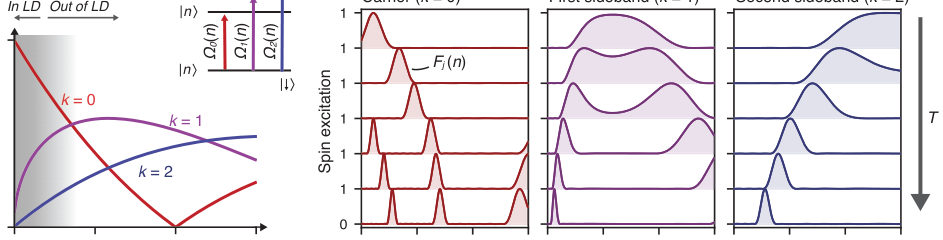
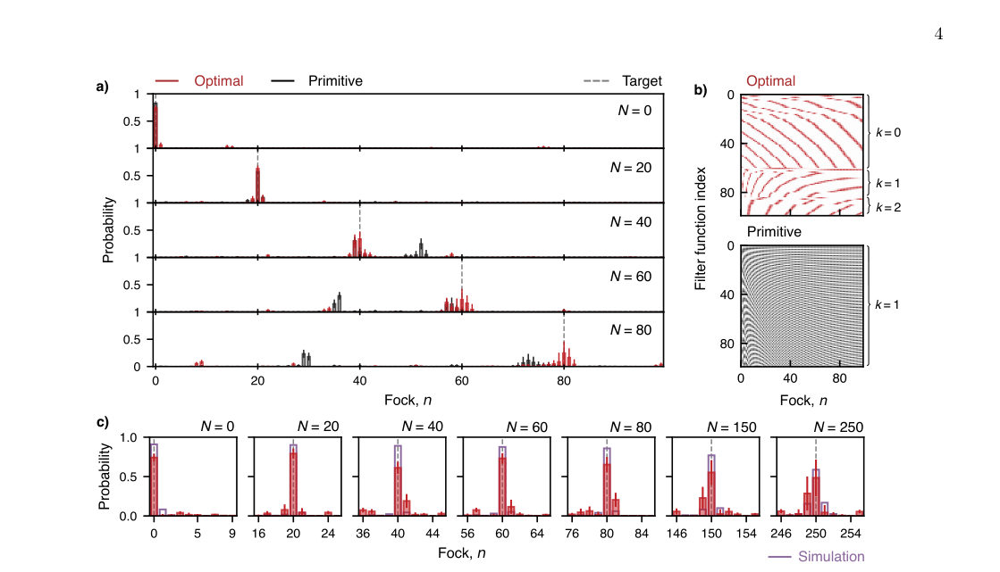
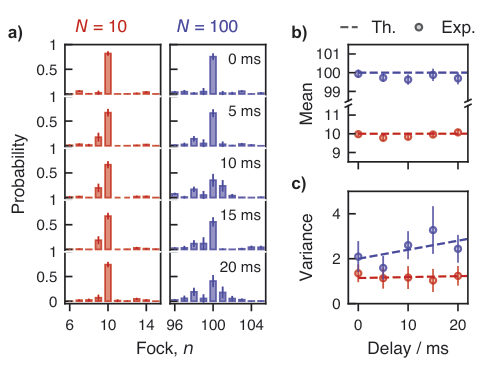
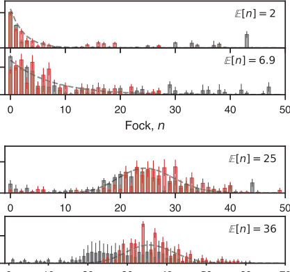

← Index · ← Previous · Next →
Authors: Ximo Wang, Xi Zhao, Xiayu Sun, Qiwei Han, Yuhang Wang, Chunxiao Du, Wenxiu Li, Hao Zhang, Rui Li
Type: theory · Category: quantum information and computing · PDF: https://arxiv.org/pdf/2609.24166v1
Analysis basis: full PDF text, analyzed in chunks
Topic relevance: 🔥 quantum measurements 4/5 · 🔥 scars & prethermalization 4/5 · methods for driven-dissipative 2/5 · analog quantum simulation 1/5 · correlated / nonlocal dissipation 1/5 · driven-dissipative phase transition 1/5
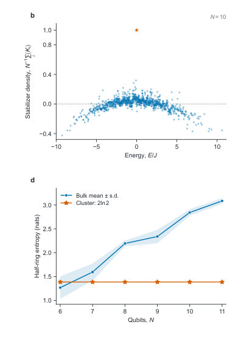
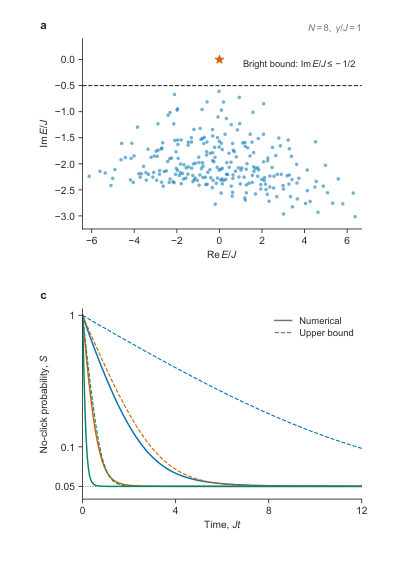
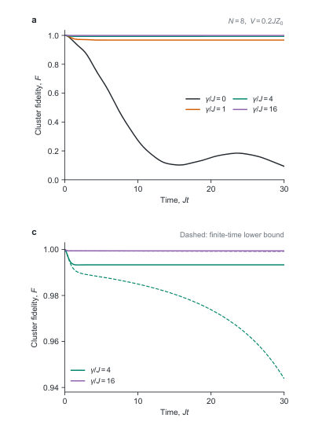
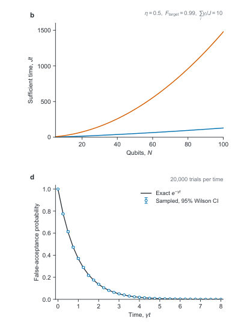
Summary. This paper develops a method to protect a specific, low-entanglement quantum state (a cluster-state scar) embedded in a complex many-body system during continuous local measurement. By deriving rigorous bounds on the conditional cluster fidelity, the authors establish the fundamental limits on state preservation. The work is significant for quantum information theory as it provides a concrete, mathematically verified framework for measurement-assisted quantum control.
Why it may be interesting. This work is highly relevant as it tackles the fundamental problem of state preparation and preservation in noisy, open quantum systems, providing concrete, mathematically rigorous bounds for measurement-based quantum control.
Main problem. The paper addresses the challenge of nondemolition filtering—preserving a low-entanglement eigenstate (a 'scar') embedded in a complex many-body spectrum while undergoing continuous local measurement.
Main result. They provide a rigorous construction and finite-time bounds for the conditional cluster fidelity, showing that the preservation process is limited by the initial preparation overlap.
Method. The analysis combines theoretical derivations of fidelity bounds using conditional probability and numerical diagonalization up to eleven qubits to provide finite-size evidence.
Model / system. The system is an N-qubit ring governed by a local ring Hamiltonian, targeting an exact cluster-state eigenvector. The dynamics are modeled using a Lindblad generator incorporating continuous local monitoring.
Key observables. Conditional Cluster Fidelity ($F_C(t)$), No-observed-click probability ($S(t)$), and the initial overlap ($p$).
Important parameters / regimes. The monitoring rate ($\gamma$), system size ($N$), and the initial preparation overlap ($p$).
Assumptions / limitations. The results rely on an explicit local embedding construction and are supported by formal verification (Lean 4); the evidence is limited to finite sizes.
Figures summary. Figures illustrate the energy spectrum showing the cluster eigenstate's position and the adjacent-gap ratio ($\langle r angle$), and time evolution plots comparing calculated fidelity/no-click probability against theoretical bounds.
Paper structure. The paper develops the theoretical framework by constructing the Hamiltonian, deriving the fidelity bounds, performing numerical diagonalization to show spectral evidence, and finally verifying the dynamics and bounds using formal proofs.
Identifying a low-entanglement eigenstate inside a many-body spectrum and preserving it during measurement are distinct tasks. We construct an explicit local ring Hamiltonian with an exact cluster-state eigenvector and study continuous monitoring of its stabilizer defects. For arbitrary mixed inputs, the conditional cluster fidelity is the initial target weight divided by the no-observed-click probability. A positive defect-operator gap gives finite-time bounds that hold for noncommuting Hamiltonian dynamics, nonnormal effective generators and imperfect detection. At fixed total monitoring rate, the guaranteed exponent falls inversely with system size; high conditional fidelity does not remove the preparation cost set by the initial overlap. Exact diagonalization up to eleven qubits gives finite-size evidence for a cluster-state outlier in a chaotic spectral background. Independent matrix and trajectory calculations verify the dynamics and a conservative coherent-error bound. This construction specializes established scar embedding and nondemolition verification frameworks, with explicit measurement assumptions, finite-time guarantees and resource limitations.
Authors: Christophe H. Valahu, Prachi Nagpal, Teerawat Chalermpusitarak, Maverick J. Millican, Cameron McGarry, Frank Scuccimarra, Vassili G. Matsos, Hon-Kwan Chan, Ting Rei Tan
Type: both · Category: other · PDF: https://arxiv.org/pdf/2609.24147v1
Analysis basis: full PDF text, analyzed in chunks
Topic relevance: 🔥 QC/QI experiment 4/5 · analog quantum simulation 3/5 · quantum measurements 3/5 · methods for driven-dissipative 2/5 · quantum optics experiment 1/5




Summary. This paper presents a novel technique to reconstruct the phonon distribution of trapped ions, overcoming the limitations of existing methods that fail beyond the Lamb-Dicke regime. By reformulating the problem as a filter-function inversion, the authors engineer robust measurement sequences using composite pulses. This allows for the high-fidelity characterization of highly excited motional states, which is crucial for advanced quantum information protocols.
Why it may be interesting. This work provides a significant methodological advance for quantum simulation and quantum information processing using trapped ions, directly addressing the practical limitations of measuring highly excited motional states.
Main problem. The core challenge is accurately characterizing the phonon distribution of trapped ions, especially when the system moves beyond the standard Lamb-Dicke regime where measurement techniques become ill-conditioned.
Main result. The authors developed a robust protocol using composite pulses and multiple sideband measurements to reconstruct phonon distributions up to $n=250$, successfully characterizing highly excited motional states and measuring heating dynamics.
Method. The problem is mathematically recast as a filter-function inversion problem, $P = F^{-1}M$, where optimal filter matrices are engineered using composite pulse sequences to ensure the matrix $F$ is well-conditioned.
Model / system. The physical system is trapped ions, whose motional modes are treated as quantum harmonic oscillators. The interactions are governed by laser-driven spin-motion coupling, analyzed using the interaction-picture Hamiltonian.
Key observables. Phonon populations $P(n)$, measured spin excitation probabilities $M_j$, and the reconstruction uncertainty derived from the filter matrix $F$.
Important parameters / regimes. Lamb-Dicke parameter ($\eta$), sideband orders ($k$), pulse duration ($T$), and the maximum measurable phonon number ($n$).
Assumptions / limitations. The primary assumption is that the measurement process can be accurately modeled by a linear inversion problem, which is achieved by engineering the filter function using composite pulses to mitigate nonlinearities beyond the Lamb-Dicke regime.
Figures summary. Figures illustrate the process of filter engineering using composite pulses across different sideband orders; they show the reconstruction of Fock states and the measurement of heating dynamics for high-$n$ states.
Paper structure. The paper systematically introduces the limitations of existing methods, proposes the filter-function inversion framework, details the use of composite pulses to build well-conditioned filters, and validates the protocol by reconstructing high-number Fock states and measuring decoherence.
Characterizing the phonon distribution of trapped-ion motional states is essential for many applications in quantum information processing, but existing methods become ill-conditioned beyond the Lamb-Dicke regime. We overcome this limitation by recasting phonon-state reconstruction as a filter-function inversion problem. Using composite pulses on the carrier and multiple sidebands, we engineer well-conditioned filters in phonon space to characterize pure and mixed states, study heating dynamics, and reconstruct Fock states up to $n=250$.
Authors: Shuyi Li, Qiang Gu
Type: theory · Category: quantum gases · PDF: https://arxiv.org/pdf/2609.24211v1
Analysis basis: full PDF text, analyzed in chunks
Topic relevance: 🔥 analog quantum simulation 4/5 · non-equilibrium universality 3/5 · Keldysh / 2PI / non-Gaussian methods 2/5 · methods for driven-dissipative 2/5 · correlated / nonlocal dissipation 1/5 · scars & prethermalization 1/5
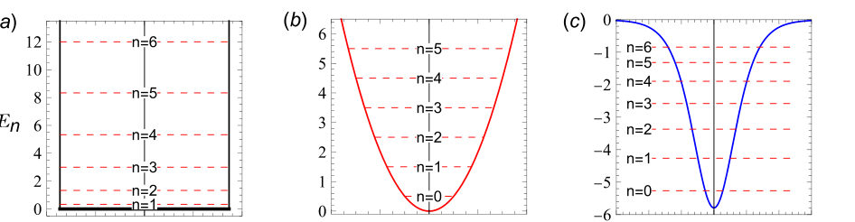
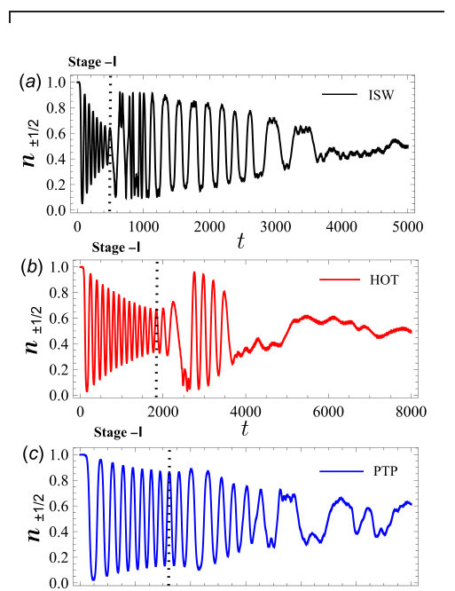
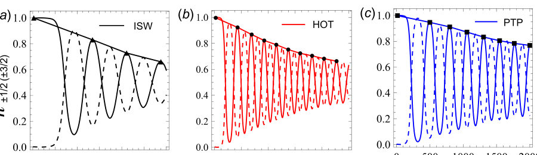
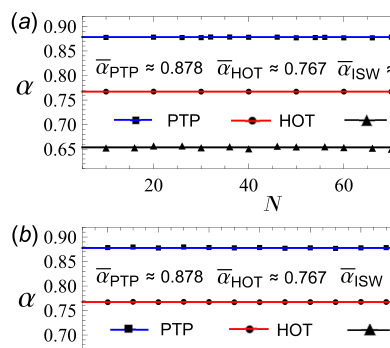
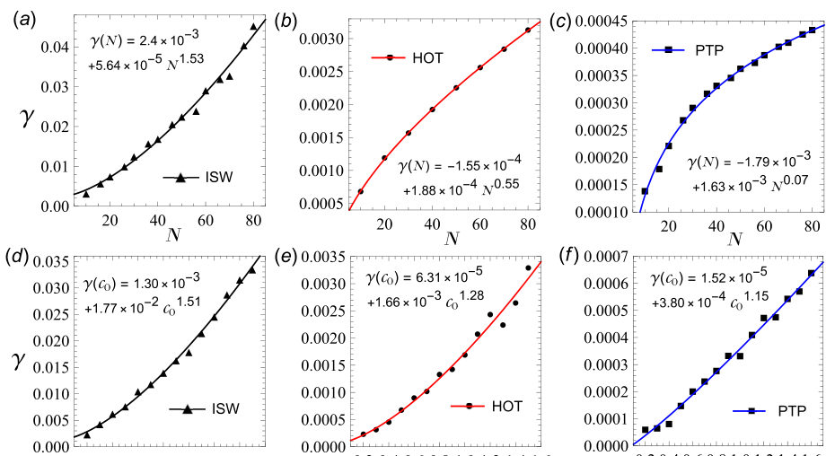
Summary. The authors study spin-mixing dynamics in a spin-3/2 Fermi gas trapped in three different potentials (ISW, HOT, PTP) to test the universality of power-law decay. They find that while the decay exponent ($\alpha$) is dictated by the specific spectral structure, the decay parameter ($\gamma$) is sensitive to interaction strength and trap size. This demonstrates that power-law decay is a robust feature not limited to the harmonic trap.
Why it may be interesting. This work provides a general understanding of how spectral geometry dictates non-equilibrium dynamics in many-body quantum systems, suggesting that the underlying single-particle spectrum is a key determinant of relaxation rates, which is highly relevant for understanding decoherence in quantum simulators.
Main problem. To investigate the origin and robustness of universal power-law decay of spin-mixing oscillations in a spin-3/2 Fermi gas, moving beyond the highly special case of the harmonic trap.
Main result. Power-law decay persists across qualitatively distinct spectral structures (ISW, HOT, PTP), and while the decay exponent ($\alpha$) is robustly determined by the spectral structure, the decay parameter ($\gamma$) is sensitive to the overall energy scale and interaction strength.
Method. The dynamics are analyzed using the Time-Dependent Hartree-Fock (TDHF) approximation applied to a spin-3/2 Fermi gas confined in three different 1D potentials.
Model / system. The system is a spin-3/2 Fermi gas governed by a Hamiltonian including single-particle ($H_0$) and interaction ($H_I$) terms. Three traps are compared: the Infinite Square Well (ISW), the Harmonic Oscillator Trap (HOT), and the Pöschl-Teller Potential (PTP).
Key observables. Coherent spin-mixing oscillations exhibiting power-law decay, characterized by the amplitude decay $A(t) = A_0 - \gamma t^\alpha$.
Important parameters / regimes. The decay exponent ($\alpha$) and decay parameter ($\gamma$). The comparison fixes the lowest excitation energy spacing ($\Delta E_1 = 1$) to isolate spectral structure effects.
Assumptions / limitations. The analysis relies on the TDHF approximation and assumes the weak-interaction regime where interaction energy is smaller than the characteristic single-particle level spacing.
Figures summary. Figures illustrate the comparison of $\alpha$ and $\gamma$ across ISW, HOT, and PTP traps, showing systematic differences in $\alpha$ but similar scaling behavior for $\gamma$ when varying trap width.
Paper structure. The paper compares the spin-mixing dynamics in three distinct 1D traps (ISW, HOT, PTP) by analyzing the power-law decay of oscillations. It first establishes the persistence of power-law decay across different spectral structures, then quantifies the dependence of the decay exponent ($\alpha$) and parameter ($\gamma$) on spectral geometry and interaction strength.
Universal power-law decay of spin-mixing oscillations has been observed in a harmonically trapped spin-$3/2$ Fermi gas, whose exactly equally spaced spectrum represents a highly special case. To gain insight into the origin of this behavior, we investigate the dynamics in traps with increasing and decreasing level spacings, represented by the infinite square well and the Pöschl--Teller potential, respectively. Despite pronounced differences in their single-particle spectra, all systems exhibit power-law decay of coherent oscillations, described by $A(t) = A_{0} - γt^α$. The exponent $α$ remains insensitive to particle number, interaction strength, and the overall energy scale, but exhibits systematic differences among traps with distinct spectral structures. In contrast, the decay parameter $γ$ is strongly influenced by both the spectral structure and the overall energy scale. These findings demonstrate that power-law decay is not restricted to the harmonic trap but persists across qualitatively distinct spectral structures. The observed variation of $α$ among different traps further suggests that the underlying single-particle spectrum plays an important role in shaping the decay dynamics.
Authors: Ximo Wang, Yichi Zhang, Qiwei Han, Xi Zhao, Yuhang Wang, Chunxiao Du, Rui Li, Wenxiu Li, Hao Zhang
Type: theory · Category: quantum information and computing · PDF: https://arxiv.org/pdf/2609.24139v1
Analysis basis: full PDF text, analyzed in chunks
Topic relevance: 🔥 quantum measurements 4/5 · scars & prethermalization 3/5 · analog quantum simulation 2/5 · methods for driven-dissipative 2/5
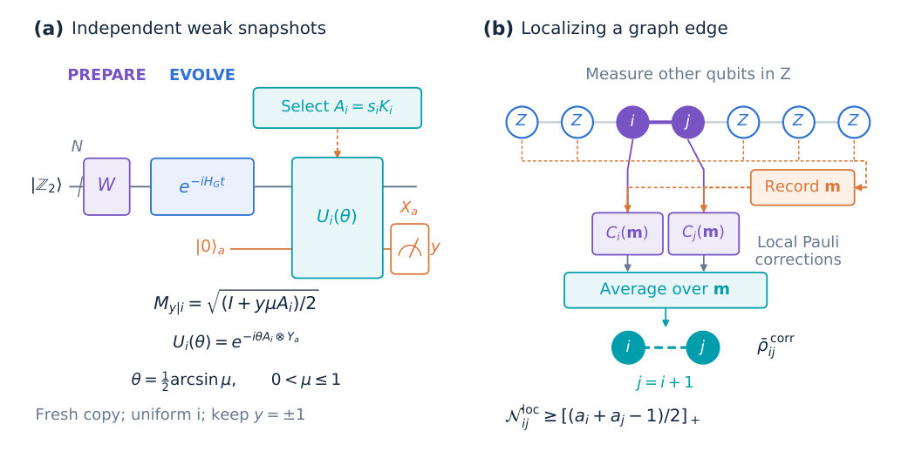
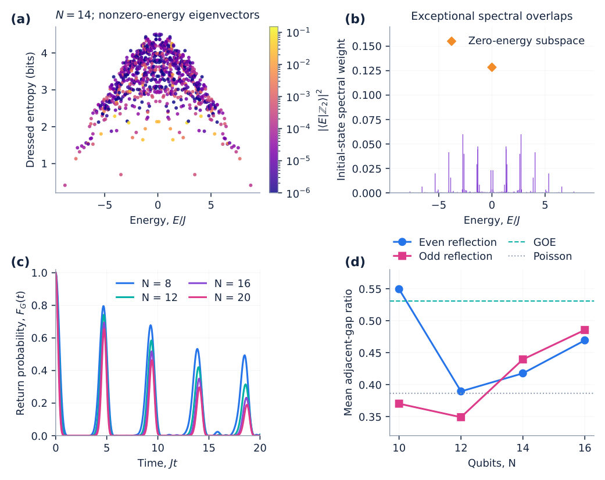
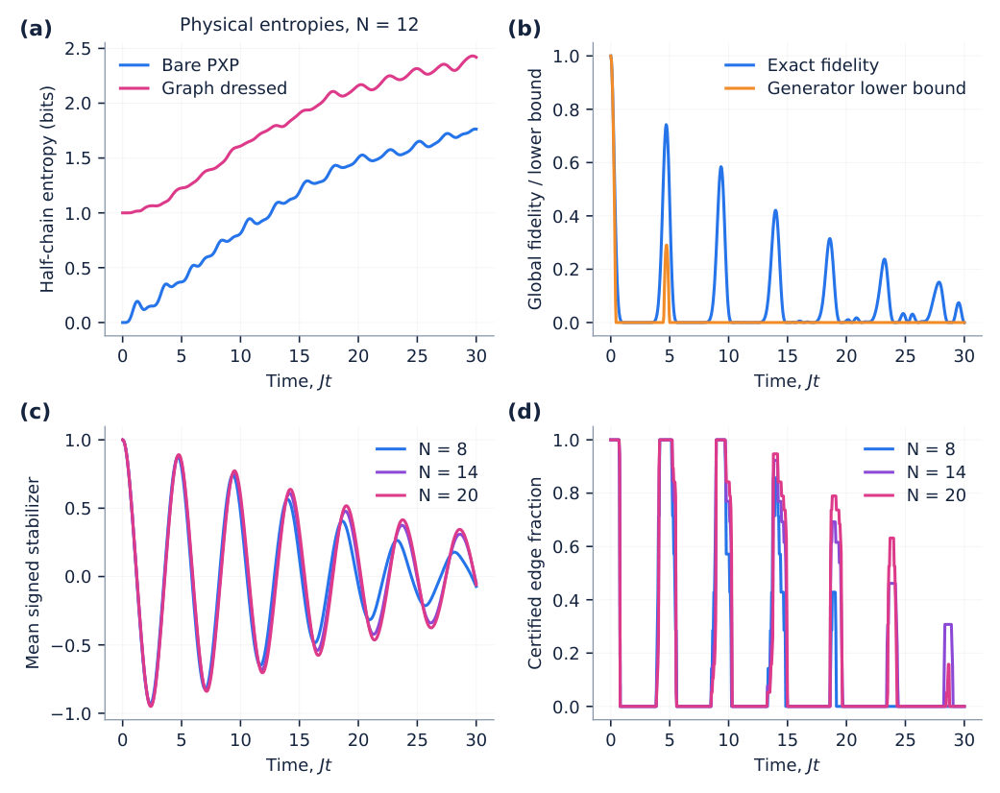
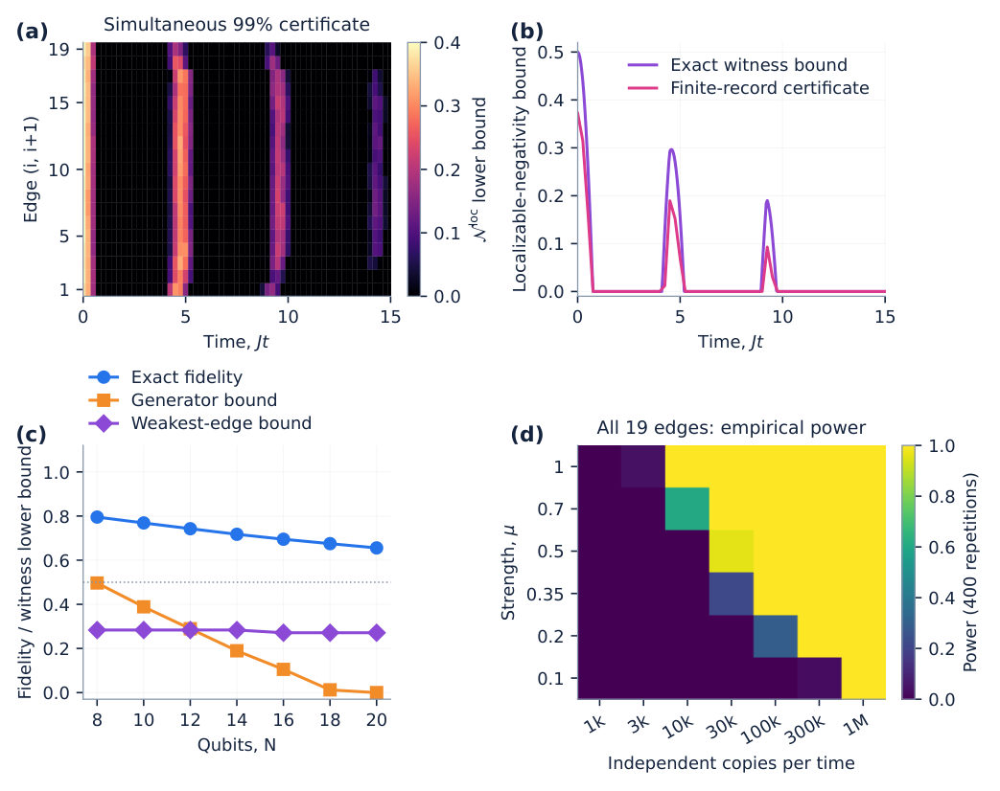
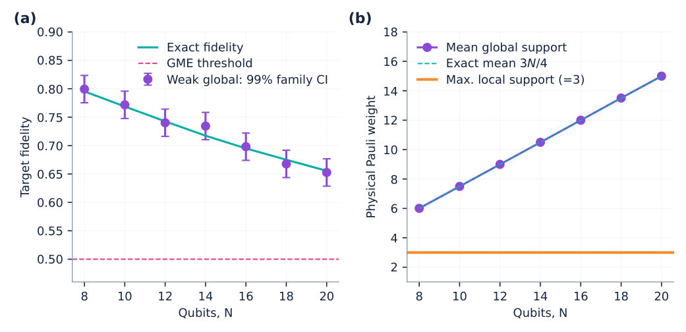
Summary. This work introduces a novel, resource-efficient protocol to certify graph-edge entanglement in a quantum chain undergoing complex dynamics. By using weak measurements and local stabilizer probes, the authors overcome limitations associated with assuming perfect measurements or pure target states. The protocol provides a quantifiable measure of recoverable entanglement under realistic noise and disturbance constraints.
Why it may be interesting. It provides a rigorous, resource-aware method for quantifying entanglement in complex, non-equilibrium quantum dynamics, which is crucial for understanding quantum computation feasibility in realistic noisy environments.
Main problem. The paper addresses how to certify graph-edge entanglement in a quantum many-body system using only sparse, weak measurement records obtained during evolution.
Main result. A finite-record protocol was developed that successfully certifies all graph edges in a test chain up to twenty spins, distinguishing this local resource from genuine multipartite entanglement.
Method. The method employs local graph-stabilizer probes within a weak measurement framework, utilizing Hoeffding's inequality to establish simultaneous confidence bounds on the measured entanglement witnesses.
Model / system. The system is a graph-dressed PXP chain, a quantum many-body model whose target state is explicitly non-eigenstate and has a non-zero energy variance.
Key observables. Graph-edge negativity, generator fidelity ($F_G$), and local Pauli expectation values ($a_i$).
Important parameters / regimes. Measurement strength ($\mu$), worst-case disturbance budget ($\delta$), and the number of spins ($N$).
Assumptions / limitations. The protocol assumes a worst-case disturbance budget and accounts for finite-duration ancilla pulses, explicitly avoiding assumptions about the target state being an exact eigenstate.
Figures summary. The notes reference testing the protocol on chains up to twenty spins, showing that the first twenty-spin return certifies all nineteen graph edges.
Paper structure. The paper establishes the problem of weak measurement certification, details the mathematical framework using weak probes and confidence bounds, derives the local certificate based on negativity, and validates the protocol through simulations on the PXP chain.
An imperfect many-body revival does not by itself certify the entanglement of the returning state. We give a finite-record protocol for graph-edge localizable entanglement along scar wavepackets of a graph-dressed PXP chain. The target cluster state has nonzero energy variance, so neither an exact target eigenstate nor a dark-state embedding is assumed. Fresh binary probes of the undeformed Hamiltonians Pauli terms have a fully separable explanation, even within the dressed blockade sector. Adding local graph-stabilizer probes makes established entanglement witnesses accessible with simultaneous confidence bounds. For a specified square-root instrument, an imposed worst-case disturbance budget fixes the strength that minimizes the equal-allocation Hoeffding sufficient sampling cost. A local commutator bound accounts for finite-duration ancilla pulses while the Hamiltonian remains active. We test the protocol on chains through twenty spins, under perturbed dynamics, and with independent implementations. At the first twenty-spin return, synthetic weak records certify all nineteen graph edges. Generator, two-color, bounded-weight, and full-group benchmarks separate this localizable resource from genuine multipartite certification. The protocol measures recoverable entanglement in a known scar wavepacket, with explicit calibration and limits on its physical and statistical interpretation.
Authors: Raphael Joos, Michal Vyvlecka, Tim Strobel, Benjamin Breiholz, Furkan Aglarci, Ponraj Vijayan, Hans-Georg Babin, Arne Ludwig, Michael Jetter, Simone L. Portalupi, Peter Michler
Type: both · Category: quantum information and computing · PDF: https://arxiv.org/pdf/2609.24858v1
Analysis basis: full PDF text, analyzed in chunks
Topic relevance: 🔥 interference shaping light 4/5 · 🔥 quantum optics experiment 4/5 · QC/QI experiment 1/5 · analog quantum simulation 1/5
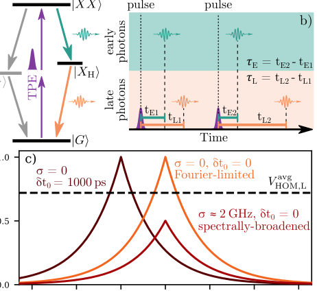
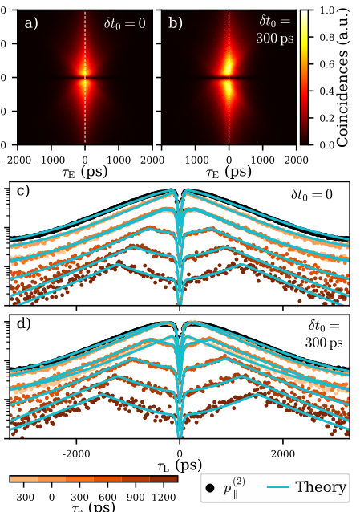
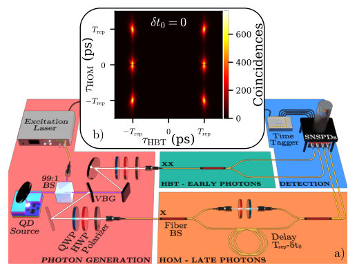
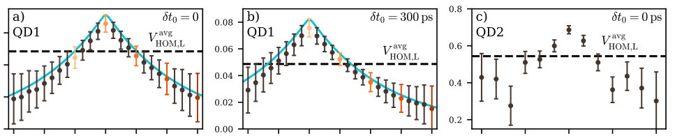
Summary. This work investigates how to overcome the inherent limitation on Hong-Ou-Mandel interference visibility when using cascaded emission from quantum dots. Theoretically and experimentally, the authors demonstrate that the visibility loss is due to temporal mismatch at the beam splitter, not the emission process itself. By implementing post-emission synchronization, they show that near-unity interference visibility can be recovered, advancing the feasibility of solid-state quantum sources for quantum networking.
Why it may be interesting. It provides a concrete, experimentally verifiable mechanism for enhancing quantum interference visibility in solid-state sources, which is crucial for building scalable quantum networks.
Main problem. The paper addresses the limitation on Hong-Ou-Mandel (HOM) interference visibility for the second photon emitted during a two-photon cascade process from quantum emitters.
Main result. The limitation is shown to stem from reduced temporal overlap at the interference beam splitter, not the cascade process itself, and maximum visibility can be recovered via post-emission synchronization.
Method. The study combines theoretical derivation of time-resolved four-photon coincidences with experimental measurements using time-resolved coincidence counting.
Model / system. The system uses semiconductor quantum dots (QDs) exhibiting an XX-X cascade, modeled as a three-level ladder system, to generate entangled photon pairs.
Key observables. Time-resolved four-photon coincidence probability density function $p_{\parallel/\perp}^{(4)}( au_E, au_L)$ and the average HOM visibility $V_{ ext{avg}}^{ ext{HOM,L}}$.
Important parameters / regimes. Time delays ($ au_E, au_L$), input delays ($\delta t_0$), and spectral broadening parameter ($\sigma$).
Assumptions / limitations. The late photon interference visibility is assumed to be determined solely by the temporal overlap at the beam splitter.
Figures summary. Figures illustrate the energy level structure and experimental setup, showing calculated time-resolved HOM visibility and measured probability density functions for different input delays.
Paper structure. The paper first introduces the theoretical model and the limitation, derives the four-photon correlation function, and then presents experimental measurements using time-resolved coincidence detection to confirm the dependence on temporal overlap.
Quantum emitters such as semiconductor quantum dots can provide entangled photon pairs emitting from a system of cascaded states. However, the resulting temporal correlation between the two photons from the three-level ladder system has been shown to set a limit on the achievable two-photon interference. In this work, we show that such limitation, for photons emitted by the second transition, is only due to reduced temporal overlap at the interference beam splitter. We investigate this theoretically and experimentally by determining time-resolved four-photon coincidences between two successively emitted photon pairs. Post-emission synchronization shows the recovery of maximum interference visibility; in prospective quantum networks this could be achieved via deterministic quantum memories.
Authors: Bouchra El Alaoui, Abdallah Slaoui, Rachid Ahl Laamara
Type: theory · Category: other · PDF: https://arxiv.org/pdf/2609.23648v1
Analysis basis: full PDF text, analyzed in chunks
Topic relevance: 🔥 Tavis-Cummings & cavity-many-emitter 4/5 · analog quantum simulation 3/5 · correlated / nonlocal dissipation 1/5 · driven-dissipative phase transition 1/5
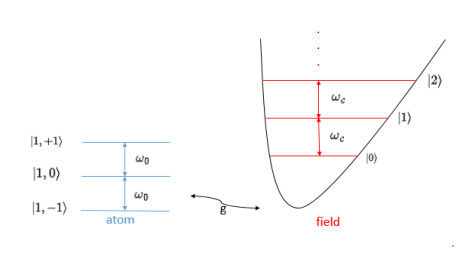
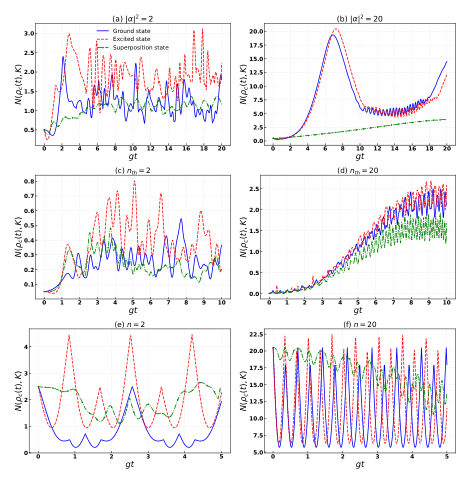
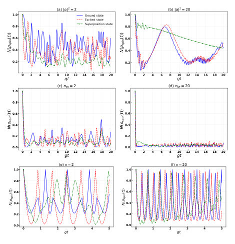
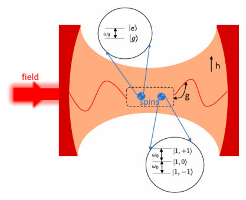
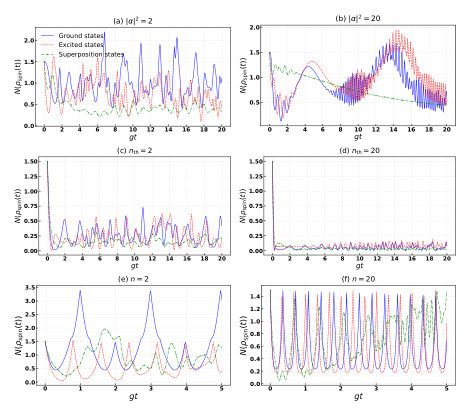
Summary. This paper theoretically examines how nonclassicality evolves in coupled light-matter systems modeled by generalized JC and TC Hamiltonians. By analyzing resonance and off-resonance regimes, the authors demonstrate that coherent energy exchange dictates the generation of quantum correlations. The findings highlight the utility of these models for engineering quantum states in cavity QED architectures.
Why it may be interesting. This work provides a detailed, tunable theoretical platform to control quantum resources (nonclassicality) in hybrid quantum systems, showing how interaction dynamics dictate quantum behavior over simple energy considerations.
Main problem. The study investigates the dynamics of nonclassicality in light-matter interactions within generalized cavity quantum electrodynamics models.
Main result. Nonclassicality dynamics are governed by interaction-mediated excitation flow and resonance conditions, rather than solely by the initial energy distribution. Off-resonance conditions localize excitations in the atomic subsystem, suppressing field nonclassicality.
Method. The analysis uses theoretical modeling of time evolution, employing the Wigner-Yanase skew information to quantify nonclassicality in both the cavity field and the atomic subsystem.
Model / system. The system involves a single bosonic cavity mode coupled to generalized spin-1 and spin-1/2 atoms, extending the Jaynes-Cummings (JC) and Tavis-Cummings (TC) models. The framework is further generalized by including an XY spin interaction.
Key observables. Nonclassicality, quantified by the Wigner-Yanase skew information ($I( ho, X)$), and the time evolution of field and spin nonclassicality.
Important parameters / regimes. Resonance conditions, longitudinal magnetic field strength (acting as effective detuning), and the strength of the XY spin interaction.
Assumptions / limitations. The analysis utilizes the rotating-wave approximation for the JC/TC models, and for the XY model, the infinite Hilbert space was truncated for numerical diagonalization.
Figures summary. The notes mention figures illustrating the time evolution of nonclassicality for different initial field states (Fock, thermal, coherent) and spin preparations, showing oscillatory behavior under resonance.
Paper structure. The paper follows a progression: first analyzing the generalized JC model with a spin-1 atom, and then extending the framework to the generalized TC model by incorporating an additional spin-1/2 atom and the XY interaction.
We investigate the dynamics of nonclassicality, quantified by the Wigner Yanase skew information, in generalized Jaynes Cummings (JC) and Tavis Cummings (TC) models describing light matter interactions in cavity quantum electrodynamics. We first analyze a generalized JC model consisting of a single bosonic cavity mode coupled to a spin 1 atom, focusing on the temporal evolution of nonclassicality in both the cavity field and the atomic subsystem. We then extend this framework to a generalized TC model by introducing an additional spin $1/2$ atom, enabling us to examine the influence of collective atomic degrees of freedom. The global dynamics are investigated both with and without an $XY$ spin interaction. Our results show that, under resonance conditions, the system exhibits efficient excitation exchange between the cavity field and the atomic subsystem, resulting in regular, coherent nonclassicality dynamics and enhanced field nonclassicality generation. Conversely, an increasing longitudinal magnetic field acts primarily as an effective detuning parameter rather than a direct exchange interaction. In this off resonant regime, the atom field coupling is substantially weakened, localizing excitations within the atomic subsystem. This localization suppresses coherent energy transfer to the cavity field, leading to a pronounced reduction in field nonclassicality, while the atomic subsystem retains the majority of the quantum correlations. Notably, atomic superposition states exhibit highly irregular spin dynamics, reflecting a detuning-induced redistribution of quantum correlations. These findings demonstrate that the dynamics of spin and field nonclassicality are governed primarily by interaction mediated excitation flow and resonance conditions rather than the initial energy distribution alone, ..
Authors: Matt K. Fu, John O. Dabiri
Type: both · Category: other · PDF: https://arxiv.org/pdf/2609.22661v1
Analysis basis: full PDF text, analyzed in chunks
Topic relevance: 🔥 QC/QI experiment 4/5 · quantum measurements 2/5 · quantum optics experiment 1/5
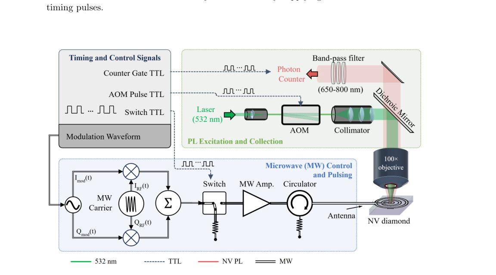
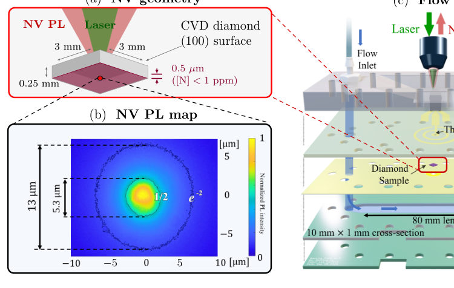
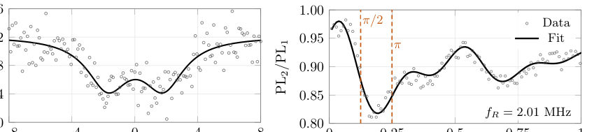
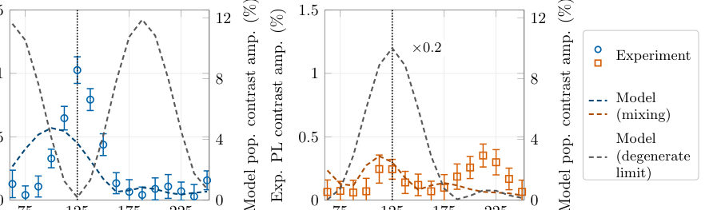
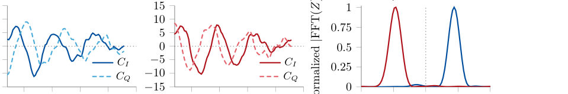
Summary. This paper analyzes pulsed thermometry in NV centers operating under conditions of near-degenerate spin transitions. The authors find that while standard thermal-echo protocols fail to yield temperature signals, a nominal spin-echo timing reveals strong, measurable temperature-dependent oscillations. This suggests that dark-state leakage provides a robust mechanism for NV thermometry suitable for low-field, mobile applications.
Why it may be interesting. This work directly addresses the limitations of standard quantum sensing protocols by modeling complex, non-ideal spin dynamics (dark-state leakage) in a highly relevant solid-state quantum system, providing a pathway for practical, field-deployable quantum thermometers.
Main problem. The study investigates how finite-duration, three-level spin dynamics affect pulsed thermometry protocols in Nitrogen-Vacancy (NV) ensembles, particularly when the microwave Rabi frequency is comparable to the transition splitting.
Main result. Nominal spin-echo timing produces resolvable temperature-sensitive oscillations at the common-mode detuning, which is attributed to significant dark-state leakage, suggesting a robust method for low-field thermometry.
Method. The authors developed and analyzed an ensemble model of the triplet spin dynamics, comparing conventional thermal-echo timing against nominal spin-echo timing using pulsed ODMR measurements.
Model / system. The physical system is the spin-1 triplet manifold of NV centers in diamond. The model incorporates the near-degeneracy of the $|0 angle o|+1 angle$ and $|0 angle o{|-1 angle}$ transitions, utilizing bright-dark state mixing concepts.
Key observables. Temperature-sensitive signal amplitudes, oscillations in photoluminescence (PL) varying with total evolution time, and the common-mode detuning phase accumulation.
Important parameters / regimes. Near-degeneracy of transitions, Rabi frequency comparable to transition splitting, and the common-mode detuning $\Delta_c(T)$.
Assumptions / limitations. The analysis contrasts the ideal drive-dominated regime with the regime where splitting and Rabi frequency are comparable; the final model captures protocol-dependent trends.
Figures summary. Figures illustrate the quantum-sensing platform setup, ODMR spectra showing two overlapping dips, and Rabi oscillations confirming the system's resonance characteristics.
Paper structure. The paper progresses from characterizing the NV platform (ODMR/Rabi measurements) to developing a theoretical ensemble model that predicts deviations from standard thermometry protocols under specific field conditions, culminating in the proposal of a modified spin-echo sequence.
Nitrogen-vacancy (NV) centers have emerged as a highly sensitive platform for spatially resolved temperature measurements. When the $\lvert0\rangle\to\lvert+1\rangle$ and $\lvert0\rangle\to\lvert-1\rangle$ transitions are nearly degenerate and the Rabi frequency is comparable to the transition splitting, the spin dynamics encountered during pulsed protocols for temperature measurement can significantly alter the intended accumulation of temperature-dependent phase. We investigate these triplet ($\lvert0\rangle$, $\lvert\pm1\rangle$) spin dynamics and their effect on pulsed thermometry protocols under these conditions. We find that the conventional thermal-echo timing produces negligible temperature-sensitive signal amplitudes at the common-mode detuning. However, we find that the nominal spin-echo timing produces resolvable oscillations at the common-mode detuning, leading to a strong temperature-sensitive carrier signal. This departure from the expected protocol behavior is qualitatively captured by an ensemble model of the triplet dynamics, which supports significant dark-state leakage as a plausible mechanism for the temperature-sensitive response. This mixing-enabled thermal echo uses a four-phase quadrature readout that resolves the signed oscillation frequency and is validated using independent sweeps of the microwave carrier frequency and fluid temperature. We further assess the ability of a four-refocusing-pulse (LDD4B) low-field dynamical-decoupling sequence to extend the NV coherence and find that while the echo retains a sensitivity to common-mode detuning, the effective phase-accumulation interval corresponds to approximately half the total evolution time. These findings could support the use of pulsed NV thermometry in biological or mobile applications where applying magnetic bias fields is impractical and microwave power may be limited.
Authors: Kento Sasaki, Hideyuki Watanabe, Tokuyuki Teraji, Takashi Taniguchi, Kenji Watanabe, Kensuke Kobayashi
Type: experiment · Category: other · PDF: https://arxiv.org/pdf/2609.22937v1
Analysis basis: full PDF text, analyzed in chunks
Topic relevance: 🔥 QC/QI experiment 4/5 · quantum measurements 1/5 · quantum optics experiment 1/5
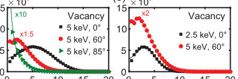
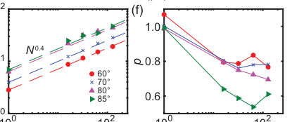
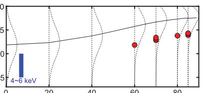
Summary. This paper demonstrates that using high-angle ion implantation is an effective, simple, and scalable method to create high-yield ensembles of shallow nitrogen-vacancy ($ ext{NV}^-$) centers in diamond. By controlling the ion incidence angle, the authors manipulate the near-surface vacancy concentration, leading to superior quantum defect quality and depth control compared to conventional methods.
Why it may be interesting. This work provides a highly practical, materials-engineering approach to creating quantum defects, which is crucial for realizing solid-state quantum sensors and quantum computing platforms.
Main problem. The primary challenge is the efficient creation of shallow, high-yield negatively charged nitrogen-vacancy ($ ext{NV}^-$) ensembles in diamond for nanoscale quantum sensing.
Main result. High-angle ion implantation ($ ext{N}$ ions at angles $>60^\circ$) significantly enhances $ ext{NV}^-$ yields (approaching 10%) and allows for the engineering of shallow $ ext{NV}^-$ depths ($<10 ext{ nm}$) in a simple, mask-free manner.
Method. The authors used high-angle ion implantation of ${}^{15} ext{N}$ ions into diamond, followed by thermal annealing, and characterized the resulting quantum defects using confocal photoluminescence (PL) microscopy and time-resolved spin measurements.
Model / system. The physical system is $ ext{NV}^-$ centers embedded in diamond. The method relies on the geometric control afforded by oblique ion incidence, which alters the near-surface vacancy-to-nitrogen ratio, promoting $ ext{NV}$ formation.
Key observables. Photoluminescence (PL) intensity, PL spectra (Zero-Phonon Line at 637 nm), $ ext{NV}^-$ ensemble depth ($d_{ ext{nv}}$), spin coherence time ($T_2$), and $ ext{NV}^-$ yield.
Important parameters / regimes. Implantation angle ($ heta > 60^\circ$), ion energy (5 keV), and the resulting vacancy-to-nitrogen ratio.
Assumptions / limitations. The PL signals are assumed to originate predominantly from charge-stable $ ext{NV}^-$ centers, and the technique is proposed as a general method for engineering shallow vacancy-related defects.
Figures summary. Figures illustrate the dependence of PL intensity and $ ext{NV}^-$ yield on implantation angle, and show PL maps and spectra confirming the enhanced yield and coherence properties at high angles.
Paper structure. The paper establishes the problem of shallow $ ext{NV}^-$ creation, proposes high-angle ion implantation as a solution, details the experimental characterization (PL, spin measurements), and concludes by demonstrating the superior performance and applicability of this geometric control method.
Negatively charged nitrogen-vacancy (NV$^-$) centers located a few nanometers below the diamond surface are key quantum defects for nanoscale sensing of external spins. However, the creation of shallow NV$^-$ centers with high yield remains a materials challenge. Here, we demonstrate that high-angle ion implantation enhances the creation efficiency of shallow NV$^-$ centers. By implanting $^{15}$N ions at angles exceeding 60$^\circ$, we achieve high NV$^-$ yields approaching 10% with effective NV$^-$ depths below 10 nm. These yields are significantly higher than those typically reported for shallow NV$^-$ creation. The enhanced NV$^-$ yield is consistent with an increased vacancy-to-nitrogen ratio in the near-surface region, which is expected to promote NV formation during annealing. The created NV$^-$ ensembles show coherence properties comparable to those of single shallow NV$^-$ centers at similar depths, and allow detection of nuclear spins in van der Waals materials attached to the diamond surface. Our results establish geometric control of ion implantation as a simple and broadly applicable approach to engineer shallow vacancy-related quantum defects.
Authors: Ilari Lilja, Ekaterina Mukhanova, Stanislav Khaldeev, Ilya Golokolenov, Visa Vesterinen, Pertti Hakonen
Type: experiment · Category: quantum information and computing · PDF: https://arxiv.org/pdf/2609.23126v1
Analysis basis: full PDF text, analyzed in chunks
Topic relevance: 🔥 QC/QI experiment 4/5 · driven-dissipative phase transition 1/5 · quantum optics experiment 1/5
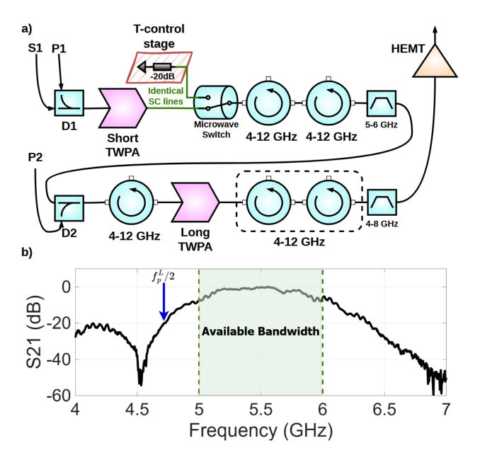
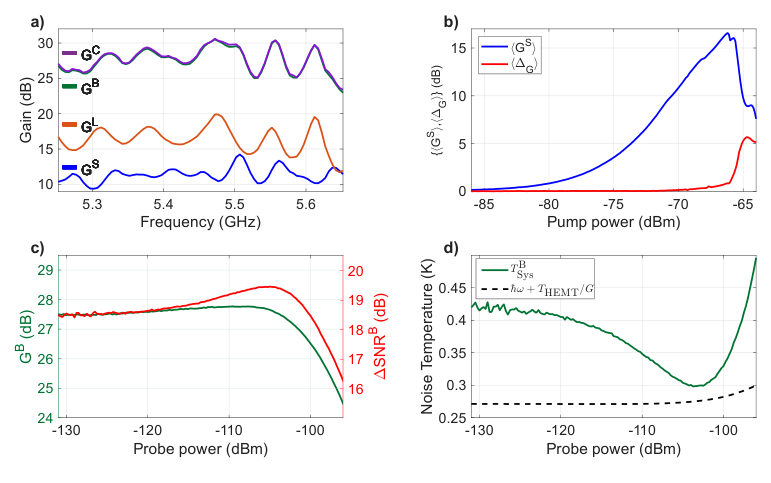
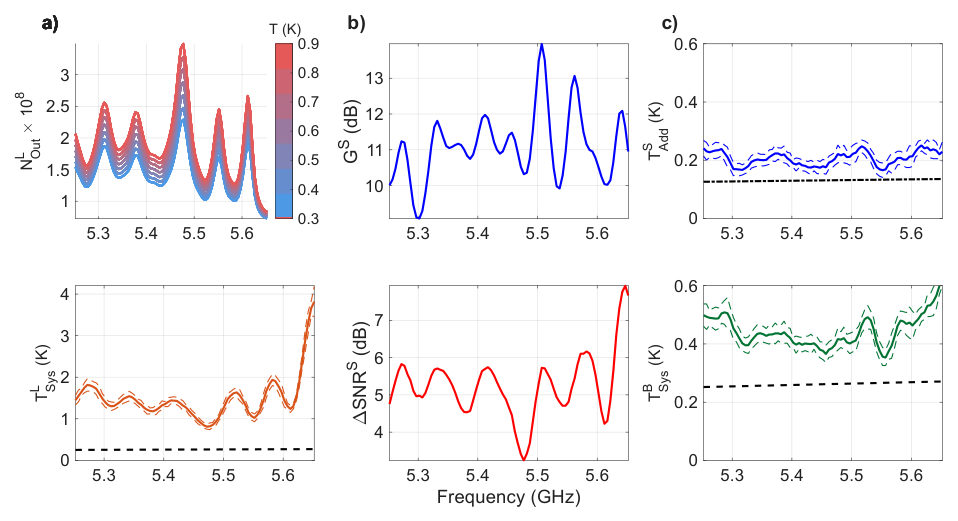
Summary. This paper demonstrates a novel, high-performance amplifier by cascading two Josephson-based Traveling-Wave Parametric Amplifiers (TWPAs). By integrating interstage filtering, the authors overcome noise and saturation issues inherent in simple series connections. The resulting device achieves high gain (nearly 30 dB) while keeping the added noise extremely close to the fundamental quantum limit, making it valuable for quantum sensing and information processing.
Why it may be interesting. The work directly addresses the engineering challenge of building quantum-limited amplifiers for quantum information processing by optimizing a complex, multi-stage superconducting circuit.
Main problem. The primary goal is to achieve high-gain, broadband amplification while maintaining added noise close to the quantum limit using cascaded Traveling-Wave Parametric Amplifiers (TWPAs).
Main result. The cascaded architecture successfully achieves nearly 30 dB of total gain over a 1 GHz bandwidth while keeping the added noise near the quantum limit, demonstrating a practical approach for quantum amplification.
Method. The authors employed a cascade design combining a short, low-dissipation TWPA stage with a conventional long TWPA stage, incorporating interstage bandpass filters to manage noise and unwanted idler frequencies.
Model / system. The system utilizes Josephson metamaterials to create TWPAs, specifically employing Superconducting Nonlinear Asymmetric Inductive Elements (SNAILs). The architecture is a two-stage cascade (S-TWPA $ ightarrow$ Filter $ ightarrow$ L-TWPA).
Key observables. Total gain (target $\sim 30$ dB), added noise temperature, and Signal-to-Noise Ratio ($\Delta ext{SNR}$).
Important parameters / regimes. Tunable bandwidth ($\sim 1$ GHz), quantum noise level ($\hbar\omega/k_B$), and the specific element counts (736 and 1632 elements).
Assumptions / limitations. The naive series connection is insufficient due to saturation and excess noise transfer, necessitating the use of interstage filters and careful pump tuning.
Figures summary. Figures illustrate the measurement setup, showing the two TWPAs and associated filters. Other figures compare gain vs. pump power, $\Delta ext{SNR}$ vs. probe power, and the total input-referred noise across the cascade.
Paper structure. The paper details the physical setup, presents the theoretical challenges of simple cascading (noise/saturation), introduces the filtered cascade solution, and finally presents quantitative measurements confirming the high gain and low added noise performance.
Traveling-wave parametric amplifiers (TWPAs) based on Josephson metamaterials provide broadband gain with near-quantum-limited added noise. Whereas long nonlinear metamaterial devices can deliver high gain, short arrays suffer less from dissipation, pump depletion, and internal standing waves which can degrade noise performance. Here, we demonstrate a cascaded TWPA architecture that combines the advantages of both approaches by employing a short (736-element), low-dissipation Superconducting Nonlinear Asymmetric Inductive eLement (SNAIL)-based TWPA as the first amplification stage, followed by a conventional long (1632-element) TWPA that provides additional gain. The resulting amplifier cascade achieves nearly 30 dB of total gain over a tunable bandwidth of approximately 1 GHz while maintaining added noise close to the quantum limit. Our results establish a cascade of TWPAs as a practical approach for high-gain, broadband, quantum amplification with applications in quantum information processing, multi-mode entanglement, and quantum sensing applications at microwave frequencies.
Authors: Jiatong Yang, Benjamin H. November, Yiting Huang, S. Minhal Gardezi, Harris Pirie, Jennifer E. Hoffman
Type: both · Category: strongly correlated electrons · PDF: https://arxiv.org/pdf/2609.24721v1
Analysis basis: full PDF text, analyzed in chunks
Topic relevance: 🔥 analog quantum simulation 4/5 · driven-dissipative phase transition 1/5 · methods for driven-dissipative 1/5
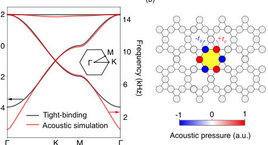
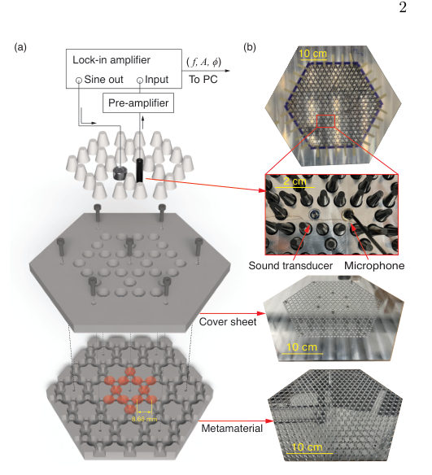
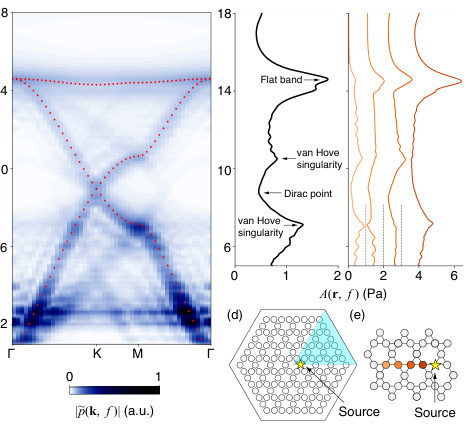
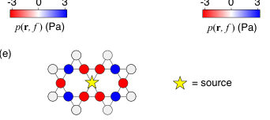
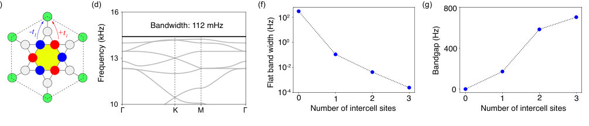
Summary. This paper introduces a novel, rapid prototyping workflow using acoustic metamaterials to study flat band physics, circumventing the high cost and time associated with traditional quantum material characterization. By implementing a tight-binding model in an aluminum kagome lattice, the authors successfully demonstrated the existence and tunability of flat bands through a combination of simulation and direct acoustic measurement. This approach significantly accelerates the search for exotic quantum states.
Why it may be interesting. This work provides a tangible, accessible, and rapid experimental platform to study phenomena typically reserved for complex, expensive quantum materials, making the exploration of flat band physics much more accessible to theorists.
Main problem. Engineering and characterizing flat band systems in quantum materials is prohibitively time-consuming and costly, limiting the exploration of the design space.
Main result. The authors demonstrated a rapid, low-cost workflow using acoustic metamaterials to successfully prototype and characterize flat band physics, showing excellent agreement between theory, simulation, and experiment.
Method. The workflow involves designing the system based on a tight-binding model, simulating the acoustic response using COMSOL, fabricating the metamaterial (e.g., CNC-milling), and measuring the acoustic response experimentally.
Model / system. The system uses acoustic metamaterials, specifically an aluminum kagome lattice, to mimic the physics of flat bands. The underlying model is a tight-binding Hamiltonian implemented via air cavities acting as lattice sites connected by channels controlling hopping.
Key observables. Flat band resonance frequency (e.g., 14.4 kHz), group velocity, acoustic field confinement (real-space mapping), and the reconstructed 2D band structure in momentum space.
Important parameters / regimes. The ability to rapidly iterate through candidate lattices by modifying the structure to cancel longer-range hopping, achieving results in hours versus months for quantum materials.
Assumptions / limitations. The design principles are assumed to apply to any fabrication method and material with sufficient acoustic impedance contrast.
Figures summary. Figures compare tight-binding theory and COMSOL simulations to experimental measurements, showing the characteristic flat band resonance and the confinement of acoustic fields at the flat-band frequency.
Paper structure. The paper establishes the problem, presents the acoustic metamaterial platform, details the workflow (design -> simulation -> fabrication -> measurement), validates the concept using the kagome lattice, and extends the methodology to design and test extended lattices.
Flat bands with vanishing group velocity and quenched kinetic energy provide fertile ground for correlated states and exotic phenomena such as unconventional superconductivity. Yet, engineering and characterizing flat bands in quantum materials is time-consuming and costly, limiting the exploration of the vast design space of possible flat band systems. Acoustic metamaterials offer an accessible alternative: they can be easily simulated, cheaply fabricated, and quickly measured. Here we present a complete workflow to rapidly prototype flat band systems using acoustic metamaterials. Our design directly implements a tight-binding model using air cavities as lattice sites connected by channels that control hopping, allowing it to generalize to diverse lattice geometries. Using the kagome lattice as a proof-of-concept, we demonstrate excellent agreement between tight-binding theory, finite-element simulations, and experimental measurements. We then design a family of extended kagome lattices whose added sites cancel successively longer-range hopping, flattening the flat band. With fabrication and measurement requiring hours rather than months and a total cost orders of magnitude lower than quantum materials, our approach enables rapid iteration through candidate lattices, facilitating the discovery of new flat band physics in quantum materials.
Authors: Malte Henkel
Type: theory · Category: statistical mechanics · PDF: https://arxiv.org/pdf/2609.24408v1
Analysis basis: full PDF text, analyzed in chunks
Topic relevance: 🔥 non-equilibrium universality 4/5 · driven-dissipative phase transition 1/5
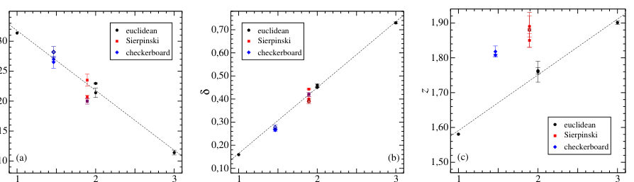
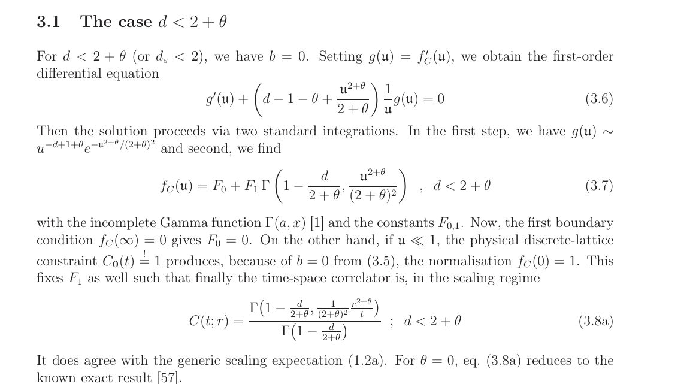
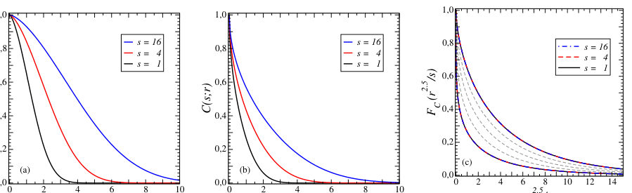
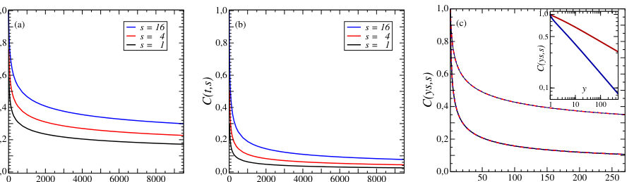
Summary. This theoretical paper derives the exact scaling behavior of correlation functions for the voter model on fractal substrates. By utilizing fractal dimensions ($d_f, d_s$), the authors confirm ageing phenomenology and calculate key dynamic exponents. This work provides quantitative insights into how geometry dictates non-equilibrium dynamics in complex systems.
Why it may be interesting. The study of non-equilibrium dynamics, aging, and critical phenomena on fractal structures provides a rich theoretical playground relevant to understanding complex many-body systems far from equilibrium.
Main problem. The paper investigates the physical aging behavior and exact correlations of the voter model when the underlying spatial substrate is a fractal.
Main result. The authors confirm generic ageing phenomenology and derive specific exponents ($\lambda = d_f$, $z = 2 + heta$) that depend on the fractal's geometric ($d_f$) and spectral ($d_s$) dimensions.
Method. The analysis employs continuum limits, scaling ansatzes, and models the dynamics using a space-dependent diffusion constant to derive the envelopes of correlators.
Model / system. The system is the voter model, treated as a classical spin model on a lattice, whose dynamics are analyzed on a fractal substrate characterized by $d_f$ and $d_s$.
Key observables. Single-time and two-time auto-correlators, the density of active interfaces ($n_r(t)$), and the dynamic exponent ($z$).
Important parameters / regimes. Geometric fractal dimension ($d_f$), spectral dimension ($d_s$), and the spectral index ($ heta$).
Assumptions / limitations. The analysis focuses on the smooth envelopes of the correlators, neglecting complex log-periodic behavior inherent to deterministic fractals.
Figures summary. Not specified.
Paper structure. The paper proceeds by establishing the continuum limit for correlators, deriving effective diffusion equations, and applying scaling arguments to determine the exponents governing the decay of observables.
The exact behaviour of the enveloppes of the single-time and two-time correlators is found for the voter model on a fractal substrate, with nearest-neighbour interactions. Herein the geometry of the fractal substrate is described by its non-integer geometric fractal dimension $d_f$, and its topology and diffusive transport by the distinct spectral dimension $d_s$. On the level of the equations of motion of the correlators this can be modelled by considering a space-dependent diffusion constant ${\cal D}(r)\sim r^{-θ}$ which implies the spectral index $θ$, itself a function of $d_f$ and $d_s$. With a scaling ansatz, the generic phenomenology of ageing is confirmed and the dynamic exponent ${z}=2+θ$ and the autocorrelation exponent $λ=d_f$ are derived. The explicitly found dynamic scaling functions are shown to depend only on the spectral dimension $d_s$. The decay of the enveloppe of the density of active interfaces with time is described by the exponent $α=1-d_s/2$ for $d_s<2$, confirming the results of preexisting numerical simulations.
Authors: Kai Chen, Junyan Guan, Zhongming Gu, Jie Zhu
Type: both · Category: strongly correlated electrons · PDF: https://arxiv.org/pdf/2609.24429v1
Analysis basis: full PDF text, analyzed in chunks
Topic relevance: 🔥 analog quantum simulation 4/5 · methods for driven-dissipative 1/5
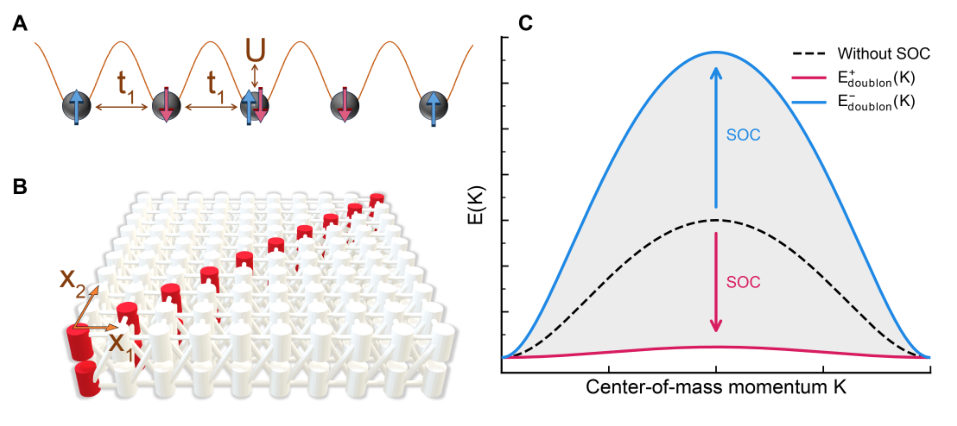
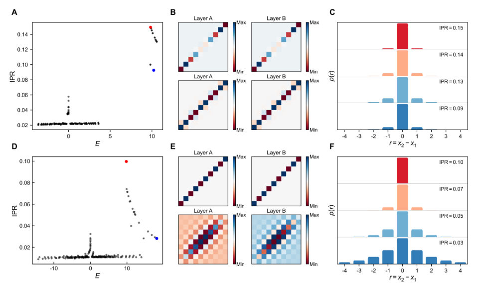
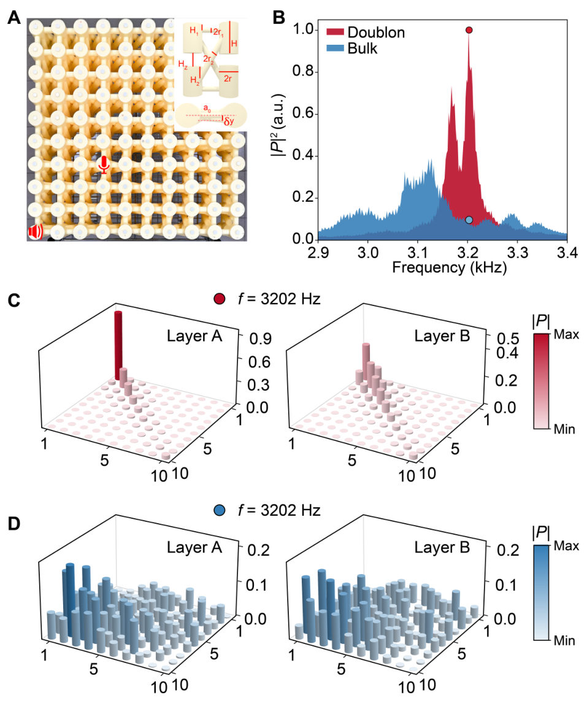
Summary. This paper explores how spin-orbit coupling can fundamentally alter the confinement of strongly interacting pairs (doublons) in a 1D Hubbard model. By analyzing the system theoretically and experimentally using acoustic lattices, the authors show that SOC can drive these pairs into the continuum while simultaneously protecting a subset of them as robust, symmetry-protected Bound States in the Continuum (BICs).
Why it may be interesting. The work provides a concrete, tunable platform (acoustic lattices) to observe fundamental many-body physics concepts, like BICs, which are typically studied in idealized quantum systems, linking theory to advanced experimental realization.
Main problem. The study investigates how spin-orbit coupling (SOC) can drive repulsively bound doublons into the scattering continuum and determine if a subset of these states can remain spatially bound as Bound States in the Continuum (BICs).
Main result. The research demonstrates that SOC can transform selected doublons into interaction-induced BICs, which are protected by symmetry and exhibit localized behavior.
Method. The theoretical problem is analyzed using the 1D Fermi-Hubbard model, which is then mapped onto a two-layer 2D lattice for experimental realization using acoustic cavities.
Model / system. The system is modeled by the spinful 1D Fermi-Hubbard Hamiltonian, incorporating hopping ($t_1$), SOC ($\lambda$), and on-site repulsion ($U$). Experimentally, this is realized using acoustic lattice structures fabricated via 3D printing.
Key observables. Inverse Participation Ratio (IPR), Transverse Spatial Distribution ($ ho(r)$), and Energy Eigenvalues.
Important parameters / regimes. The key regimes involve comparing $\lambda=0$ vs. $\lambda eq 0$, and the flat band condition $t_1 = \lambda$.
Assumptions / limitations. The two-particle problem is mapped onto a two-dimensional lattice of coupled acoustic cavities, and the analysis exploits inter-layer swap symmetry.
Figures summary. Figures show the mapping of the system, the Density of States (DOS) comparing doublon and bulk modes, and spatial pressure distributions confirming localization (high IPR) for BIC states.
Paper structure. The paper first establishes the theoretical framework using the Hubbard model and SOC, showing the transition from isolated bound states to continuum hybridization. It then details the mapping to an acoustic lattice and presents experimental measurements confirming the existence and properties of the symmetry-protected BICs.
Repulsively bound doublons are two-particle composites formed by strong interactions and are usually separated from the scattering continuum. Introducing spin-orbit coupling fundamentally alters the underlying band structure, providing a powerful tuning knob to shift these isolated pairs toward this continuum. However, because entering such a regime typically dictates immediate dissociation, whether this coupling can drive these pairs inside while preserving their bound nature constitutes a fundamental unresolved challenge. Here we show that spin-orbit coupling in the one-dimensional Fermi-Hubbard model can drive doublons into the two-particle scattering continuum. Most of these states hybridize with extended channels and decay, whereas a subset remains decoupled and spatially bound, forming many-body bound states in the continuum (BICs). We map the interacting two-particle problem onto a two-dimensional lattice of coupled acoustic cavities, and experimentally observe both the radiating doublon continuum and the confined BIC states. These results demonstrate that spin-orbit coupling can turn selected doublons into interaction-induced BICs, deepening the understanding of continuum physics for interaction-bound pairs.
Authors: Madhumita Kabiraj, Raka Dasgupta
Type: theory · Category: disordered systems and neural networks · PDF: https://arxiv.org/pdf/2609.24247v1
Analysis basis: full PDF text, analyzed in chunks
Topic relevance: 🔥 analog quantum simulation 4/5 · Keldysh / 2PI / non-Gaussian methods 1/5
Summary. This work investigates the Bose-glass phase in disordered bosonic systems using the Bose-Hubbard model. By analyzing spectral functions, spatial fluctuations, and localization measures, the authors demonstrate that disorder creates a glassy state characterized by localized, low-energy excitations. The study is significant because it shows that multiple, complementary diagnostics are required to fully map the complex evolution of this glassy quantum phase.
Why it may be interesting. It provides a detailed, multi-diagnostic view of glassy physics in bosonic systems, which is highly relevant for understanding quantum phase transitions in disordered cold atom setups.
Main problem. The paper characterizes the glassy nature of the Bose-glass (BG) phase in the disordered Bose-Hubbard model, moving beyond simple phase boundary identification.
Main result. The BG phase is driven by disorder, which introduces localized low-energy states and spatial inhomogeneity; however, thermal fluctuations gradually wash out these glassy signatures.
Method. The study employs three complementary diagnostics—spectral function analysis, spatial inhomogeneity ($\sigma$), and the Inverse Participation Ratio (IPR)—to map the evolution of the BG state.
Model / system. The system is the disordered Bose-Hubbard Model (DBHM), governed by a Hamiltonian including random on-site disorder ($\epsilon_i$). The analysis uses Green's function formalism, Gutzwiller ansatz, and exact diagonalization.
Key observables. Finite-temperature spectral function, spatial inhomogeneity ($\sigma$), Inverse Participation Ratio (IPR), and the low-energy spectral weight near $\omega=0$.
Important parameters / regimes. Disorder amplitude ($\Delta$), temperature ($T$), and the ratio $\Delta/U$.
Assumptions / limitations. No single diagnostic fully captures the BG evolution, necessitating a combined characterization approach.
Figures summary. Figures illustrate the phase diagram showing BG regions emerging near Mott-lobe edges and spreading inward with increasing disorder, while also showing the spectral evolution from clean to strongly disordered regimes.
Paper structure. The paper systematically analyzes the BG phase by applying multiple diagnostics (spectral, spatial, localization) to map how disorder drives glassiness and how temperature melts these features, emphasizing the need for multi-faceted characterization.
In this work, we characterize the glassy character of the Bose-glass phase in a disordered Bose-Hubbard model using three complementary diagnostics: the finite-temperature spectral function, spatial inhomogeneity, and the inverse participation ratio. Spectral analysis, obtained from finite-temperature Green's function and random phase approximation, shows that disorder introduces localized low-energy states within the Mott gap, eventually closing the gap at sufficiently strong disorder. Spatial inhomogeneity, calculated using the Gutzwiller ansatz, increases sharply with disorder and then saturates at moderate disorder strengths. The inverse participation ratio has been calculated from the exact diagonalization of a small system, and it reveals enhanced localization with stronger disorder. Increasing temperature suppresses these disorder-induced features: the low-energy spectral weight diminishes, the spatial inhomogeneity varies more smoothly, and the IPR decreases. Taken together, these diagnostics show that disorder drives the development of glassy character, while thermal fluctuations gradually wash out its signatures. The early saturation of spatial inhomogeneity compared with the continued evolution of low-energy excitations and the inverse participation ratio demonstrates that no single diagnostic fully captures the evolution of the Bose-glass state, highlighting the need for a combined characterization.
Authors: Yang Xiao, Jin Wang
Type: theory · Category: statistical mechanics · PDF: https://arxiv.org/pdf/2609.22821v1
Analysis basis: full PDF text, analyzed in chunks
Topic relevance: 🔥 quantum measurements 4/5
Summary. This paper proposes a Quantum Otto Information Engine (OIE) to overcome the fundamental limitation that quantum heat engines can only operate efficiently in the slow, quasi-static limit. By incorporating a Maxwell's demon for measurement and feedback control, the OIE successfully extracts work and maintains high efficiency even when driven rapidly. This demonstrates a pathway for building high-performance, non-equilibrium quantum machines.
Why it may be interesting. This work directly tackles non-equilibrium thermodynamics by integrating information theory (Maxwell's Demon) into energy conversion cycles, which is highly relevant for understanding open quantum systems and quantum thermodynamics.
Main problem. The primary challenge addressed is overcoming the quasi-static bottleneck in quantum heat engines, which severely limits their practical power output.
Main result. The proposed Quantum Otto Information Engine (OIE) surpasses the quasi-static limits of conventional engines, achieving near-perfect efficiency alongside positive work extraction even in the rapid-driving regime.
Method. The authors analyze the engine cycle by replacing the standard isochoric heating stroke with a process involving a Maxwell's demon's measurement and state-dependent feedback control.
Model / system. The model is a quantum Otto engine cycle applied to a spin-1/2 particle, utilizing a single Gibbs reservoir and incorporating the information processing steps of a Maxwell's demon.
Key observables. Efficiency ($\eta$), work output ($W$), quantum coherence ($C( ho)$), and quantum mutual information ($I$).
Important parameters / regimes. Measurement error ($\epsilon$), driving time ($ au$), and the comparison to quasi-static limits.
Assumptions / limitations. The analysis assumes the demon's energy cost is accounted for, and specific conditions are derived for achieving zero heat dissipation.
Figures summary. Figures illustrate the schematic cycles (OHE vs. OIE) and plot work and efficiency versus driving time ($ au$) and measurement error ($\epsilon$), demonstrating performance improvements.
Paper structure. The paper first establishes the limitations of the conventional Otto Heat Engine (OHE) in finite time. It then introduces the OIE, detailing how the demon's measurement and feedback mechanism modifies the cycle. Finally, it analyzes the performance in the rapid-driving regime to prove the theoretical advantages of the OIE.
Generally, quantum heat engines driven by Gibbs reservoirs achieve their maximum work and efficiency only in quasi-static processes, a constraint that hampers practical applications due to the resulting vanishing power output. To address this fundamental limitation, we propose a finite-time quantum Otto information engine (OIE) driven by a Maxwell's demon paired with a single Gibbs reservoir. We demonstrate that the demon's measurement and feedback control can preserve quantum coherence to extract coherent work, while harnessing quantum internal friction as a work source. Consequently, the OIE can produce work by only modulating the eigenstates of the Hamiltonian, and surpass the quasi-static limits of its conventional counterpart in the work output and the efficiency, which accounts for the energetic cost of the demon. Notably, the OIE can achieve near-perfect efficiency alongside positive work extraction in the rapid-driving regime.
Authors: Necati Çelik
Type: theory · Category: statistical mechanics · PDF: https://arxiv.org/pdf/2609.24425v1
Analysis basis: full PDF text, analyzed in chunks
Topic relevance: 🔥 quantum measurements 4/5
Summary. This paper proposes a protocol to extract work from a quantum battery by coupling it to an auxiliary pointer system. By performing a projective measurement on the pointer, the system's state is conditionally prepared, allowing for work extraction. The key finding is that this measurement-assisted feedback successfully recovers the full initial extractable work, providing a physical realization of a quantum Maxwell demon.
Why it may be interesting. This work directly addresses quantum thermodynamics, providing a concrete, analytically tractable model for quantum Maxwell's demon using measurement feedback, which is highly relevant to open quantum systems and energy harvesting.
Main problem. The paper investigates how measurement-assisted feedback can be used to extract work from a quantum battery, specifically recovering work otherwise lost due to entanglement with an unobserved auxiliary system.
Main result. For pure initial states, the average work extractable via measurement-assisted feedback (daemonic ergotropy) exactly equals the standard ergotropy of the initial state, demonstrating the recovery of full extractable work.
Method. The analysis involves modeling the unitary evolution coupling the battery to a continuous-variable pointer, calculating the reduced state, and then determining the conditional extractable work based on a projective measurement outcome.
Model / system. The system consists of a two-level quantum battery coupled unitarily to a continuous-variable pointer (like a motional mode). The interaction is governed by $U = \exp(-i k t \, \hat{H} \otimes \hat{P}/\hbar)$, generating entanglement between the battery's energy eigenstates and the pointer's position.
Key observables. Daemonic ergotropy, standard ergotropy, coherence factor ($\Gamma(\chi)$), and the net extractable work ($W_{ ext{net}}$).
Important parameters / regimes. The dimensionless interaction parameter $\chi = d/\sigma$, which controls the distinguishability of the pointer states.
Assumptions / limitations. The analysis assumes the joint system undergoes unitary evolution and focuses on the case where the initial battery state is pure. A key limitation noted is the need to account for measurement and feedback costs.
Figures summary. Not specified.
Paper structure. The paper establishes the theoretical framework by defining the unitary coupling, analyzes the resulting coherence loss in the reduced state, and then calculates the average extractable work by averaging the conditional ergotropy over all possible pointer measurement outcomes.
We propose a protocol for extracting work from a coherent quantum battery state by exploiting measurement-assisted feedback mediated by a continuous-variable pointer. The scheme relies on the unitary operator $U = \exp(-i k t \, \hat{H} \otimes \hat{P}/\hbar)$, which generates entanglement between the battery's energy eigenstates and the position of an auxiliary pointer. A subsequent projective measurement of the pointer's position conditionally prepares the battery in a pure state from which work can be extracted via a feedback unitary. We analyze the protocol for a two-level quantum battery and a Gaussian pointer, computing the conditional states and the corresponding daemonic ergotropy. For the pure initial state considered, we find that the daemonic ergotropy equals the standard ergotropy for all interaction strengths, demonstrating that the measurement-assisted feedback recovers the full extractable work that would otherwise become inaccessible due to entanglement with the pointer when its degrees of freedom are traced out. The protocol thus provides a physically transparent realization of a quantum Maxwell demon, where the pointer acts as a quantum measurement ancilla whose position becomes correlated with the battery's energy. The scheme is amenable to experimental implementation in trapped-ion systems, and it contributes to the ongoing efforts to understand the role of quantum coherence and measurement in thermodynamics.
Authors: Cosmin Andrei, Vlatko Vedral
Type: theory · Category: other · PDF: https://arxiv.org/pdf/2609.22976v1
Analysis basis: full PDF text, analyzed in chunks
Topic relevance: 🔥 quantum measurements 4/5
Summary. This work explores the conditions under which quantum measurements yield results independent of the measurement strength, a property called Measurement-Strength Invariance. The authors show that this invariance can be engineered in specific measurement protocols, allowing the recovery of weak-value physics without relying on the traditional weak-coupling approximation. This advances the operational understanding of weak measurements beyond simple theoretical limits.
Why it may be interesting. It provides a deep theoretical understanding of the operational limits of weak measurements, showing that accessing weak-value physics does not always require the idealized weak-coupling limit, which is crucial for designing realistic quantum measurement schemes.
Main problem. The paper investigates when the conditional expectation value derived from a quantum measurement protocol remains independent of the measurement strength, a property termed Measurement-Strength Invariance.
Main result. This invariance, which causes the finite-strength result to exactly match the weak value, is possible for specific measurement protocols, even when the weak coupling limit is not strictly necessary.
Method. The authors analyze the measurement-disturbance protocol by comparing finite-strength conditional averages to the standard weak-value definition, generalizing the analysis from simple qubit models to higher dimensions.
Model / system. The study uses the Lund-Wiseman measurement-disturbance protocol, analyzing quantum systems (qubits and higher dimensions) undergoing interaction with a probe and subsequent post-selection.
Key observables. Weak values ($\langle A angle_w$), finite-strength conditional expectation values ($\langle A angle(g)$), measurement precision ($\epsilon(A)$), and disturbance ($\eta(B)$).
Important parameters / regimes. Probe coupling strength ($g$), Hilbert space dimension ($N$), and the overlap parameter ($\mu$).
Assumptions / limitations. The analysis focuses on the real part of the weak value and assumes the applicability of the measurement-disturbance framework.
Figures summary. The notes refer to schematic diagrams (Fig. 1) and specific qubit implementations (Fig. 2, Fig. 3) illustrating the measurement-disturbance protocols.
Paper structure. The paper progresses from establishing the general failure of weak value interpretation at finite strength to demonstrating the specific conditions (interplay between probe interaction, ancillary measurement, and post-selection) that restore strength invariance, first in the Lund-Wiseman protocol and then generalizing to higher dimensions.
Weak values are conventionally extracted in the limit of vanishing measurement strength. At finite strength, the corresponding post-selected conditional averages generally acquire nonlinear corrections and need not retain their weak value interpretation. Here we identify a class of measurement protocols for which this expectation fails: the conditional value reconstructed from the measuring probe is exactly independent of the probe strength and therefore coincides with the real part of the weak value. We first analyze this phenomenon in the measurement--disturbance protocol introduced by Lund and Wiseman. We then establish conditions under which this invariance persists, showing that it is determined by the interplay between the probe interaction, a subsequent measurement interaction with an ancillary apparatus, and the final post-selection. These results demonstrate that weak coupling, although generally sufficient for accessing weak values, is not always necessary.
Authors: Nico Albert, Masudul Haque, Shovan Dutta
Type: theory · Category: statistical mechanics · PDF: https://arxiv.org/pdf/2609.24993v1
Analysis basis: full PDF text, analyzed in chunks
Topic relevance: analog quantum simulation 3/5 · correlated / nonlocal dissipation 3/5 · driven-dissipative phase transition 3/5 · methods for driven-dissipative 3/5 · non-equilibrium universality 3/5 · Keldysh / 2PI / non-Gaussian methods 2/5 · scars & prethermalization 2/5 · Frenkel-Kontorova 1/5 · quantum measurements 1/5
Summary. The authors demonstrate how to engineer the Mpemba effect in a quantum system by combining Stark localization with local dissipation. They use a bosonic chain model governed by a Lindblad master equation to show that hotter initial states cool faster than colder ones. This effect is purely quantum and can be enhanced by interactions, offering clear signatures for experimental realization in cold-atom setups.
Why it may be interesting. This work provides a concrete, tunable mechanism for observing a non-trivial non-equilibrium phenomenon (Mpemba effect) in a controllable quantum setting, which is highly relevant for understanding open quantum systems dynamics.
Main problem. The paper addresses the challenge of engineering the Mpemba effect—where hotter initial states cool faster—in quantum systems, a phenomenon typically associated with classical, rugged energy landscapes.
Main result. The combination of Stark localization in the energy landscape and local incoherent hopping successfully generates a pronounced, purely quantum Mpemba effect with parametrically separated cooling timescales.
Method. The dynamics are analyzed using the Lindblad master equation, and relaxation times are calculated using perturbation theory and Padé interpolation across different regimes of the dissipation rate.
Model / system. The model uses a bosonic tight-binding chain subjected to a linear (Stark) potential, with dissipation introduced via a local incoherent hopping term ($\Gamma = \sqrt{\gamma} b_1^\dagger b_2$). The system can be extended to include attractive on-site interactions.
Key observables. Mpemba effect (faster cooling for higher initial energy), super-exponentially separated relaxation times ($ au_j$), and the trace distance between time-evolved and steady-state density matrices.
Important parameters / regimes. The hopping rate ($\gamma$) relative to the potential gradient ($\Delta$), and the interaction strength ($U$) when considering interacting bosons.
Assumptions / limitations. The analysis relies on the assumption that the energy eigenstates are sufficiently localized by the Stark potential, which allows for the separation of timescales. Perturbative expansions are used for calculating decay rates.
Figures summary. Figures illustrate the time evolution of energy showing faster cooling for higher initial energy, quantum jump trajectories, and comparisons between perturbative estimates and exact numerical results for relaxation rates.
Paper structure. The paper first establishes the theoretical framework using the Lindblad master equation on a Stark-localized chain. It then derives relaxation time approximations for weak and strong dissipation limits, demonstrating the Mpemba effect. Finally, it extends the analysis to interacting bosons, showing enhancement of the effect based on interaction regimes.
In classical systems, rugged potential energy landscapes provide a transparent mechanism for the celebrated Mpemba effect, in which hotter initial states cool down faster. This picture generally does not survive in quantum systems. Here we show how to design a quantum energy landscape with local dissipation leading to an Mpemba effect with parametrically separated timescales. Our approach uses Stark localization to design an energy landscape and localized incoherent hopping as cooling mechanism. The hops are triggered by rare "detection" events whose rate grows with energy, allowing hotter states to cool faster and producing super-exponentially separated cooling rates for localized initial states. We further show that the effect is dramatically enhanced by collective hopping of bound pairs in the presence of attractive on-site interactions. These findings have clear experimental signatures accessible in present-day setups.
Authors: Rahul Das, Satya N Majumdar, Arnab Pal
Type: theory · Category: statistical mechanics · PDF: https://arxiv.org/pdf/2609.24438v1
Analysis basis: full PDF text, analyzed in chunks
Topic relevance: driven-dissipative phase transition 3/5 · methods for driven-dissipative 3/5 · non-equilibrium universality 3/5 · Keldysh / 2PI / non-Gaussian methods 2/5 · correlated / nonlocal dissipation 2/5 · quantum measurements 2/5 · scars & prethermalization 2/5 · analog quantum simulation 1/5
Summary. This paper develops a general theory for non-equilibrium steady states in stochastic processes that undergo threshold resetting. By analyzing the drift-diffusion model, the authors derive that the steady-state distribution depends on the ratio of the mean local time to the mean first-passage time. The work provides deep insights into how boundary-induced events shape the long-term spatial and temporal behavior of physical systems.
Why it may be interesting. The theoretical framework developed for analyzing non-equilibrium steady states driven by boundary-induced events (threshold resetting) provides a general tool applicable to open quantum systems or quantum dynamics where dissipation or measurement-induced resets are present.
Main problem. The paper investigates the emergence of Non-Equilibrium Steady States (NESS) and the relaxation dynamics of stochastic processes subjected to threshold resetting.
Main result. The NESS distribution is found to be proportional to the ratio of the Mean Local Time (MLT) to the Mean First-Passage Time (MFPT). The analysis also reveals rich intermediate-time dynamics, including anomalous relaxation and damped oscillations.
Method. The authors employ a renewal formalism and Laplace transformation techniques to derive general conditions for NESS existence and analyze the propagator $P(x, t|x_0)$.
Model / system. The primary model is a general stochastic process, specifically analyzed using a one-dimensional drift-diffusion process. The process is characterized by resetting to the initial configuration upon crossing a predefined spatial boundary (the threshold).
Key observables. Non-Equilibrium Steady State (NESS) distribution, Mean Local Time (MLT), Mean First-Passage Time (MFPT), Mean-Square Displacement (MSD), and the probability propagator $P(x, t|x_0)$.
Important parameters / regimes. The Péclet number ($Pe = x_0 v / (2D)$) governs the relative importance of advection versus diffusion, defining different dynamical regimes.
Assumptions / limitations. The analysis assumes the reset event is instantaneous upon reaching the threshold, and the general framework relies on the existence of a finite MFPT to guarantee a NESS.
Figures summary. Figure 1 schematically illustrates the threshold resetting process on a semi-infinite line. Other figures likely detail the mathematical structure of the propagator or the resulting steady-state profiles.
Paper structure. The paper first establishes the general theoretical framework for NESS under threshold resetting. It then applies this formalism to the drift-diffusion process, deriving the steady-state solution using renewal equations and Laplace transforms. Finally, it analyzes the transient dynamics, including large-time asymptotics, for specific parameter regimes.
We study the emergence of non-equilibrium steady states (NESS) in stochastic processes under threshold resetting, an event-driven protocol in which the system resets to its initial configuration upon crossing a prescribed spatial boundary (threshold). In contrast to externally driven resetting, whose steady-state properties are well understood, the behavior under threshold resetting remains largely unexplored. We derive general conditions for the existence of a NESS and show that, whenever it exists, the steady state at a given position $x$ can be expressed as the ratio of two fundamental quantities: the mean local time (MLT) at $x$ and the mean first-passage time (MFPT) to hit the threshold. In particular, for noisy systems, a finite MFPT guarantees the existence of a NESS. As an illustrative example, we analyze a drift-diffusion process in one dimension and uncover rich intermediate-time dynamics, including anomalous relaxation in the spatial distribution, damped oscillations in the moments and in the mean-squared displacement (MSD), governed by system parameters. Our findings provide a general understanding of the emergence of non-equilibrium steady states and relaxation dynamics under threshold resetting, revealing how induced events shape the spatial and temporal properties of a broad class of stochastic processes.
Authors: Mateusz Wiśniewski
Type: theory · Category: statistical mechanics · PDF: https://arxiv.org/pdf/2609.24450v1
Analysis basis: full PDF text, analyzed in chunks
Topic relevance: Keldysh / 2PI / non-Gaussian methods 3/5 · correlated / nonlocal dissipation 3/5 · methods for driven-dissipative 3/5 · driven-dissipative phase transition 2/5 · non-equilibrium universality 2/5 · quantum measurements 2/5 · Frenkel-Kontorova 1/5 · scars & prethermalization 1/5
Summary. This paper addresses the mathematical complexity of non-Markovian dynamics by proposing an effective mass approach. This method allows researchers to analyze systems with short memory by approximating them with an equivalent Markovian model. The results highlight that short-time correlations are vital, capable of causing dramatic effects like reversing particle transport direction.
Why it may be interesting. The methodology of mapping non-Markovian dynamics onto an effective, renormalized parameter (the mass) is a powerful technique applicable to open quantum systems where memory effects are crucial for accurate modeling.
Main problem. The core problem is accurately describing the dynamics of physical systems that exhibit memory (non-Markovian behavior), which arises because the system's current state depends on its entire history.
Main result. The study demonstrates that short-time memory effects can profoundly alter dynamics, notably by allowing the reversal of directed transport in Brownian particles compared to memoryless environments.
Method. The authors introduce a novel 'effective mass approach' to bridge the gap between complex non-Markovian dynamics and simpler Markovian descriptions by encapsulating memory effects into a renormalized mass term.
Model / system. The primary model involves Brownian particles moving in complex, correlated environments, such as viscoelastic media or intracellular cytoplasm, which necessitates the use of the Generalized Langevin Equation (GLE).
Key observables. Directed transport characteristics, velocity reversal, memory-induced absolute negative mobility, and the generation of random information bits.
Important parameters / regimes. The ratio between the memory time and the characteristic dynamic time scales; the memory kernel $K(t)$.
Assumptions / limitations. The standard approach often neglects memory when the memory time is much shorter than the dynamic time scales, which the effective mass approach aims to correct.
Figures summary. Not specified, but the context suggests figures illustrate the comparison between memory-dependent and memory-independent transport behavior.
Paper structure. The work progresses from establishing the theoretical background (GLE for non-Markovian processes) to detailing the novel effective mass approximation, and finally applying this framework to analyze specific transport phenomena.
Memory is an inherent feature of the dynamics of physical systems. It typically emerges when the complex structure of the system is simplified during the modeling process, obscuring a part of its underlying behavior. Consequently, the correct description of such a physical model requires knowledge of not only its present, but also its past states, leading to non-Markovian dynamics. The resulting interactions depending on the system history, however, introduce a significant layer of mathematical complexity. For this reason, when the memory time is significantly shorter than the time scales characterizing the dynamics, it is typically neglected at the cost of losing information regarding its role in the system behavior. In this dissertation, I introduce a novel methodology, namely the effective mass approach, which bridges the Markovian and non-Markovian regimes and provides an accessible framework for analyzing systems with short memory. In this method, the non-Markovian system is approximated with its Markovian counterpart, in which the short-memory effects are encapsulated within an effective mass. I then utilize this approach to demonstrate that the impact of short memory on physical dynamics can be remarkably pronounced. In particular, I show that the directed transport of a Brownian particle in an environment exhibiting temporal correlations can be reversed relative to its behavior in a memoryless medium. Moreover, I propose a setup wherein memory serves as a~control parameter for the generation of random information bits. Collectively, the results of this dissertation underscore the critical importance of short-time correlations in microscopic systems.
Authors: Vincenzo Macrì, Franco Nori, Alessandro Ferreri
Type: theory · Category: statistical mechanics · PDF: https://arxiv.org/pdf/2609.24900v1
Analysis basis: full PDF text, analyzed in chunks
Topic relevance: driven-dissipative phase transition 3/5 · methods for driven-dissipative 3/5 · non-equilibrium universality 3/5 · Keldysh / 2PI / non-Gaussian methods 2/5 · analog quantum simulation 2/5 · correlated / nonlocal dissipation 2/5 · Tavis-Cummings & cavity-many-emitter 1/5 · quantum measurements 1/5

Summary. The authors develop a fully quantum model for optomechanics to explain vacuum-mediated heat transfer, showing that neglected higher-order interactions are responsible for the coupling. They then apply quantum thermodynamics to demonstrate that by cyclically modulating this coupling, the system can function as a quantum heat engine capable of extracting net work.
Why it may be interesting. This work bridges quantum optics, cavity QED, and non-equilibrium statistical mechanics by providing a microscopic, quantum-mechanical framework to analyze energy flow (heat and work) in a mechanical system driven by vacuum fluctuations.
Main problem. To provide a microscopic explanation for the vacuum-mediated heat transfer observed between mechanical membranes in cavity optomechanics, and to demonstrate the system's potential as a quantum heat engine.
Main result. Higher-order optomechanical interactions generate phonon-phonon coupling that accounts for the observed heat transfer, and the system can extract net work by cyclically modulating this coupling.
Method. The analysis uses a fully quantum model, deriving effective Hamiltonians and solving the Lindblad master equation under the adiabatic approximation to calculate work and heat currents.
Model / system. The system is a cavity optomechanical setup with two movable membranes coupled to a quantum electromagnetic field. The dynamics are governed by an effective Hamiltonian derived from higher-order interactions, leading to phonon-phonon coupling.
Key observables. Energy exchange/heat transfer, phonon-phonon coupling ($\hat{H}_{JI}^{(2)}$), net extracted work ($ ext{W}_{ ext{ext}}^{ ext{cyc}}$), and thermal efficiency ($\eta$).
Important parameters / regimes. Large detuning regime ($\omega_n \gg \Omega$), modulation frequency ($ heta$), and the coupling ratio $g_{th}/g_c$.
Assumptions / limitations. The analysis relies on the adiabatic approximation ($ heta/\Gamma \ll 1$) for the heat engine cycle and assumes idealized boundary conditions for the Casimir term initially.
Figures summary. Figure 1 compares Casimir-mediated phonon coupling and dissipation rates versus membrane separation, and shows corresponding phononic thermalization.
Paper structure. The paper first establishes the microscopic origin of heat transfer via higher-order interactions, separating the coupling into thermal and Casimir parts. It then analyzes steady-state thermalization and finally applies quantum thermodynamics using a time-dependent modulation protocol to calculate the extractable work and efficiency.
In cavity optomechanics, the standard large-detuning regime is commonly described by retaining only the radiation-pressure interaction, while higher-order mirror--field interactions are assumed to be negligible. This approximation, however, fails to provide a microscopic explanation for the vacuum-mediated heat transfer observed between the mechanical membranes in the experiment of Fong, et.al.,[Nature \textbf{576}, 243 (2019)], whose physical origin has remained under active debate. Here, using a fully quantum model, we show that the neglected higher-order optomechanical interactions naturally generate phonon-phonon coupling and quantitatively account for the observed energy exchange within the standard optomechanical framework. Building on this microscopic description, we further propose a protocol in which phonon-phonon interaction drives a cyclic process enabling net work extraction. Our results establish the fundamental role of higher-order optomechanical interactions and provide a microscopic framework for describing next-generation optomechanical experiments beyond the linear approximation.
← Index · ← Previous · Next →